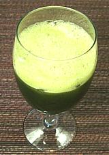

|
Pennywort DrinkSoutheast Asia - Rau-Ma (Viet); Bebida de Centella Asiática (Spanish) | ||||
| Serves: Effort: Sched: DoAhead: |
4 ** 15 min Part |
A refreshing and tonic cold drink very popular throughout Southeast Asia and gaining adherents worldwide. Some described the taste as wheat grass like. I cannot confirm that - I haven't tasted wheat grass since the early '60s. | |||
| Pennywort drink should be consumed soon after making it, because the bright green color will soon fade. It is available canned in Asian markets (see Note-3), and some Vietnames restaurants may have it fresh as "Rau-ma drink". | |||||
|
6 3 1/2 ar |
oz c c |
Pennywort (1) Water Simple Syrup (2) Ice |
|